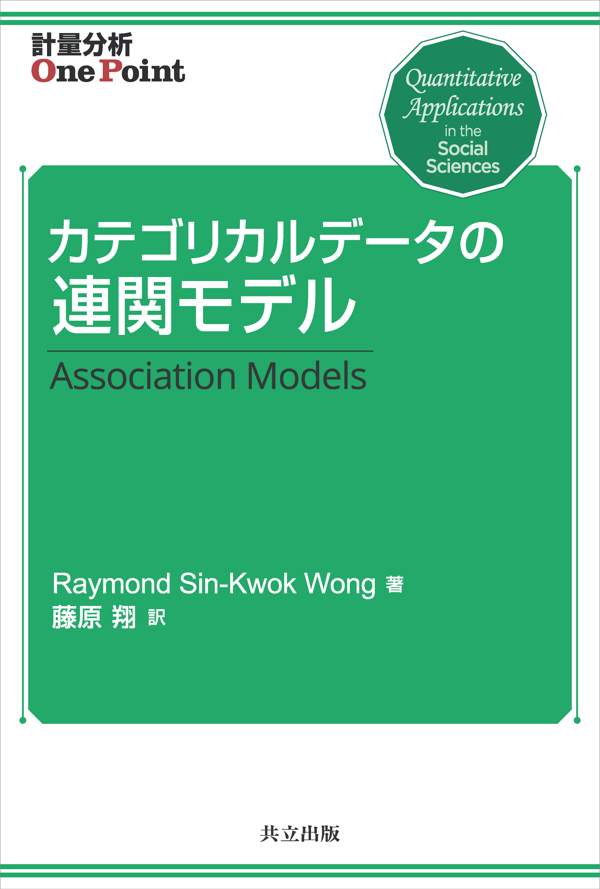
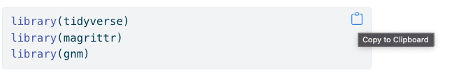

『カテゴリカルデータの連関モデル』
はじめに
目的
このページは共立出版の「計量分析One Point」シリーズのひとつとして出版された
Raymond Wong著・藤原翔訳．2023．『カテゴリカルデータの連関モデル』共立出版． のためのサポートページです．
2023年11月29日販売

本書の付録や補遺とすることも検討しましたが，Association Modelsは他のQuantitative Applications in the Social Sciences (QASS)に比べて分量が多いため（156ページ！），そしてRのバージョンアップやパッケージの更新などに備えるため，正誤表もあわせて公開するためにオンラインで公開することにしました．本書と関連した連関モデルの適用例の情報についても，このサポートページで補うことができればと思います．
このサポートページでは，特にRの基本的な操作方法と，Rを用いた連関分析の方法を紹介します．各章ごとにRの実行方法をまとめています．モデルの意味や結果の解釈などについては本書を参考にしてください．
なおこのサポートページの内容は英語版のサポートページ が元になっています．そちらもぜひ参考にしてください．lem は Jeroen K. Vermunt教授のホームページからダウンロードできます．
構成
まず，シリーズ編者による内容紹介，第1章から第6章までをできるだけ再現することを試みます．現在のRのgnmパッケージだけではできないことも部分的にはあります．またそれ以外にも自由度や関連した先行研究の再現 （Duncan (1979), Yamaguchi (1987)，Xie (1992)）などを行います． 他の対数線形モデルや対数乗法モデルについての最近の動向についてもアップデートしていきます．
Rのスクリプト
本サポートページのスクリプトはそのままコピー・アンド・ペーストすることが可能です． スクリプトを選択してコピーしても良いですし，各スクリプトの右上の図をクリックしてもコピーされます．

なおRのスクリプトについては 訳者のGitHubページ の scripts というフォルダに保存されているので，そちらを参照してください．Googleドライブにもスクリプトを保存しておきます．
正誤表
- 原著 p. 133，Table 5.5，訳書 p. XX 表5.5のモデル1の\(\Delta\)の値は
3.85ではなく33.85です．（2023年11月7日）
サポートページバージョン情報
version 1になるにはもう少し時間がかかります．
- 2023年5月1日: version 0.1.
- 2023年11月7日: version 0.2.
- 2024年1月26日: version 0.21.
- 2024年2月4日: version 0.3.
- 2026年1月28日: version 0.4.